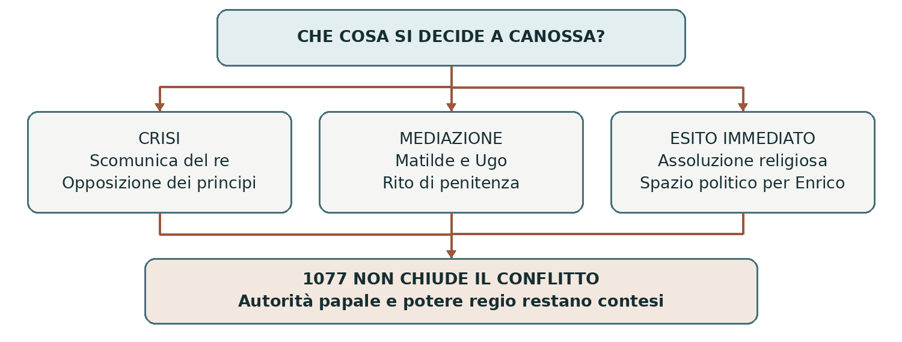

1076–1077 • Penitenza, mediazione e lotta per il potere
Canossa
Nel gennaio 1077 Enrico IV ottenne da Gregorio VII la revoca della scomunica nel castello di Canossa. L’episodio è ricordato come l’umiliazione di un sovrano davanti al papa. Fu però anche una mossa politica che modificò i rapporti tra re, pontefice e principi tedeschi, senza chiudere il conflitto sulle investiture.
0. Domanda generatrice
A Canossa vinse il papa oppure il re riuscì a evitare una sconfitta più grave?
In sintesi Il risultato cambia secondo il piano osservato: religioso, simbolico o politico. Per comprenderlo occorre ricostruire la crisi precedente.
1. Il mondo precedente
Nell’XI secolo i vescovi erano guide religiose e spesso detentori di terre, diritti e poteri pubblici. Per i sovrani influire sulle loro nomine significava intervenire anche nel governo dei territori. La questione delle investiture non era quindi una disputa su un semplice rito: riguardava il controllo di persone e risorse decisive.
La riforma della Chiesa sosteneva una maggiore autonomia del clero dai poteri laici e combatteva pratiche
come la simonia. Divenuto papa nel 1073, Gregorio VII rivendicò con particolare forza l’autorità
pontificia. Enrico IV, re dei Romani, difendeva invece prerogative consolidate della monarchia. Nel 1077
non era ancora stato incoronato imperatore: lo sarebbe stato nel 1084.
In sintesi Il conflitto univa disciplina ecclesiastica e governo politico in una società nella quale questi piani erano strettamente collegati.
2. Le fratture
Nel 1076, all’assemblea di Worms, Enrico e parte dell’episcopato a lui vicino contestarono Gregorio VII. Il papa reagì scomunicando il re, dichiarandolo deposto e sciogliendo i sudditi dal vincolo di fedeltà. Erano pretese di autorità molto forti: la loro efficacia concreta dipendeva dal comportamento dei principi e degli altri poteri.
I principi tedeschi ostili a Enrico sfruttarono la crisi e chiesero che risolvesse il contrasto con la Chiesa. Il pontefice era atteso in Germania come arbitro. Se papa e oppositori si fossero incontrati mentre il re era ancora scomunicato, Enrico avrebbe rischiato di perdere il trono. Decise quindi di attraversare le Alpi e cercare direttamente l’assoluzione.
In sintesi La scomunica divenne pericolosa perché si intrecciò con un’opposizione politica già esistente.
3. Attori, gruppi e conflitti
L’incontro non si riduce a due protagonisti. Furono decisivi il contesto tedesco e la mediazione di persone capaci di parlare a entrambi.
| Attori | Obiettivi e interessi |
|---|---|
| Enrico IV | Vuole rientrare nella comunità cristiana e indebolire gli argomenti dei principi che lo contestano. |
| Gregorio VII | Difende l’autorità pontificia, ma deve anche accogliere un penitente che chiede riconciliazione. |
| Matilde di Canossa | Potente signora territoriale, sostenitrice del papato e padrona del castello; partecipa alla mediazione. |
| Ugo di Cluny | Abate autorevole e padrino di Enrico; contribuisce alla trattativa. |
| Principi tedeschi | Difendono interessi e autonomie; alcuni cercano un’alternativa al re. |
In sintesi La mediazione agì entro un sistema di rapporti personali, religiosi e territoriali.
4. Il processo storico
Il viaggio e la scelta di Canossa
Enrico attraversò le Alpi nell’inverno del 1076–1077 con un seguito limitato. Gregorio, che si muoveva
verso il mondo tedesco, si trovava nel castello di Canossa, nell’Appennino reggiano, protetto da Matilde.
Il luogo non era una semplice dimora privata: faceva parte di una rete di fortificazioni e poteri capace di
garantire sicurezza al pontefice.
Presentandosi come penitente, Enrico portò la questione sul terreno religioso. Gregorio poteva contestare il sovrano, ma incontrava difficoltà nel negare indefinitamente il perdono a chi mostrava pentimento. La scelta del re trasformava quindi un gesto di sottomissione in una risorsa politica.
Il rito penitenziale e l’assoluzione
Nella lettera inviata ai principi tedeschi, Gregorio racconta che Enrico attese per tre giorni, scalzo e vestito
di lana, chiedendo misericordia. Questo è il racconto del papa, non una registrazione neutrale. Documenta
il valore pubblico dei segni di penitenza; non autorizza a riempire la scena di particolari pittoreschi non
verificati.
Il 28 gennaio 1077 Gregorio tolse la scomunica dopo impegni e mediazioni. Enrico rientrava nella
comunione ecclesiastica. Non si trattò però di una soluzione definitiva sul diritto di investire i vescovi né di
una pacificazione automatica del regno. Assoluzione religiosa e riconoscimento politico restavano
questioni distinguibili.
Il conflitto riprende
Nel marzo 1077 una parte dei principi elesse comunque Rodolfo di Svevia come re rivale. Seguirono
guerra e ulteriori scontri con il pontefice. Nel 1080 Gregorio scomunicò nuovamente Enrico, che sostenne
un papa rivale, Clemente III. Canossa aveva mutato la crisi, non eliminato le sue cause.
Nel 1084 Enrico fu incoronato imperatore a Roma da Clemente III. Gregorio, liberato dall’intervento
normanno ma costretto a lasciare la città, morì a Salerno nel 1085. La lunga lotta per le investiture trovò un
compromesso solo con il concordato di Worms del 1122, tra protagonisti di una generazione successiva.
In sintesi L’assoluzione del 1077 fu un passaggio tattico decisivo dentro un conflitto che continuò per decenni.
Lo snodo decisivo
Enrico accettò una pubblica penitenza per impedire che la scomunica restasse la base più forte della sua esclusione politica. Un’umiliazione simbolica poteva servire alla sopravvivenza del potere.
5. Le fonti in dialogo
Gregorio VII racconta l’incontro ai principi
La lettera del papa ai principi tedeschi, scritta dopo l’incontro del gennaio 1077, spiega perché egli abbia assolto Enrico. I destinatari erano coinvolti nella contestazione del re.
Contenuto — sintesi didattica: Gregorio descrive l’insistenza del penitente e la compassione suscitata nei presenti. Presenta l’assoluzione come risposta a una richiesta religiosa e ricorda gli impegni assunti, mantenendo aperta la questione politica.
Interpretazione e limiti: Il pontefice deve giustificare una scelta che poteva deludere gli avversari di Enrico. La lettera è preziosa proprio perché mostra i vincoli del papa, ma va distinta da un resoconto imparziale.
Domanda di lettura: Perché Gregorio insiste sulle pressioni dei presenti e sulla richiesta di misericordia?
Fonte: lettera di Gregorio VII — Yale, Avalon Project
In sintesi La fonte racconta il rito e insieme difende la decisione di chi scrive.
6. Conseguenze e nuovo assetto
L’autorità spirituale del papa apparve capace di condizionare la legittimità di un sovrano. Tuttavia Enrico ottenne un risultato immediato importante: non era più scomunicato. I principi dovettero proseguire il confronto politico in una situazione modificata.
La memoria successiva ridusse spesso Canossa a una scena di sottomissione. L’espressione “andare a Canossa” indica ancora una richiesta umiliante di perdono. Il linguaggio conserva un’immagine efficace, ma semplifica una trattativa nella quale agirono più soggetti e interessi.
In sintesi Il significato simbolico di Canossa fu enorme; il suo effetto politico fu complesso e non definitivo.
7. Conclusione
Canossa non ebbe un solo vincitore. Gregorio affermò il valore della propria autorità; Enrico ottenne l’assoluzione e spazio per continuare a lottare. Distinguere questi esiti permette di capire la politica medievale oltre la scena celebre.
Sintesi finale Le investiture collegavano religione e governo. Nel 1076 la scomunica aggravò la crisi del re. Matilde e altri mediatori resero possibile l’incontro. Il 28 gennaio 1077 Enrico ottenne l’assoluzione. La guerra continuò; il compromesso sulle investiture arrivò nel 1122.
Per studiare e collegare
Coordinate essenziali
Canossa, Appennino reggiano; regno tedesco e Roma. Crisi del 1076–1077, con sviluppi fino al concordato di Worms del 1122.
Saperi irrinunciabili
1. Canossa va collocata nella lotta per le investiture.
2. I vescovi esercitavano anche funzioni politiche.
3. Gregorio VII divenne papa nel 1073.
4. Enrico IV nel 1077 era re, non ancora imperatore incoronato.
5. La prima scomunica risale al 1076.
6. I principi tedeschi sfruttarono la crisi.
7. Matilde di Canossa fu una protagonista politica e mediatrice.
8. L’assoluzione fu concessa il 28 gennaio 1077.
9. Canossa non risolse la questione delle investiture.
10. La fonte papale deve essere letta considerando destinatari e scopo.
Mappa concettuale

Il piano religioso e quello politico si intrecciano senza produrre un unico esito.
Strumenti e attività
Linea del tempo ragionata
| Quando | Che cosa cambia |
|---|---|
| 1073 | Elezione di Gregorio VII. |
| 1076 | Rottura di Worms; scomunica; pressione dei principi. |
| 28 gennaio 1077 | Assoluzione di Enrico a Canossa. |
| Marzo 1077 | Elezione del re rivale Rodolfo di Svevia. |
| 1080–1085 | Nuova scomunica, incoronazione di Enrico e morte di Gregorio. |
| 1122 | Concordato di Worms: compromesso sulle investiture. |
Vocabolario essenziale
Investitura. Atto che conferisce un ufficio o diritti; qui riguarda soprattutto i vescovi.
Scomunica. Esclusione dalla comunione ecclesiastica.
Penitenza. Riconoscimento della colpa espresso mediante atti di riparazione.
Legittimità. Riconoscimento del diritto a esercitare un potere.
Attività di comprensione
1. Distingui l’obiettivo religioso e quello politico del viaggio di Enrico.
2. Spiega perché Matilde non può essere considerata una semplice spettatrice.
3. Argomenta in dieci righe la frase “a Canossa la sottomissione fu anche una strategia”.
Fonti e approfondimenti
Approfondimento di storia per la classe terza. Fonti e studi per verificare e ampliare la lettura.
Treccani — Gregorio VII
Fordham University — Lettere sul conflitto tra Gregorio ed Enrico
Treccani — Il significato di andare a Canossa